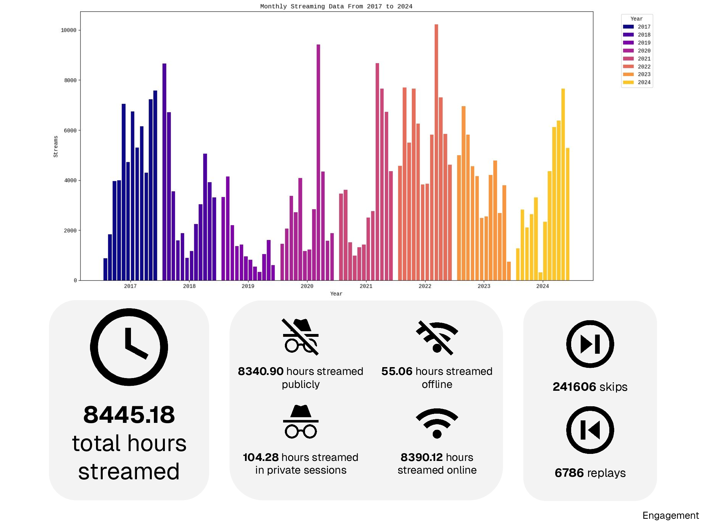
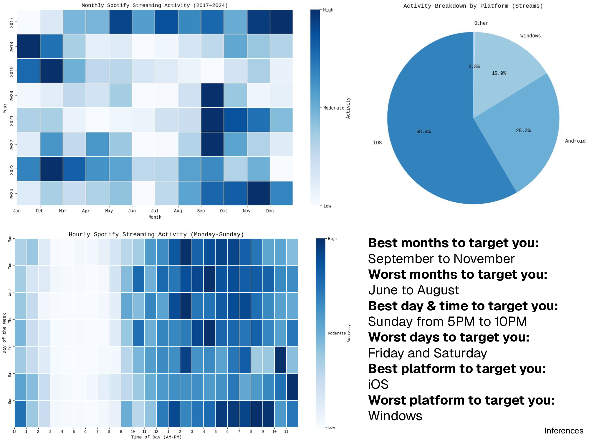
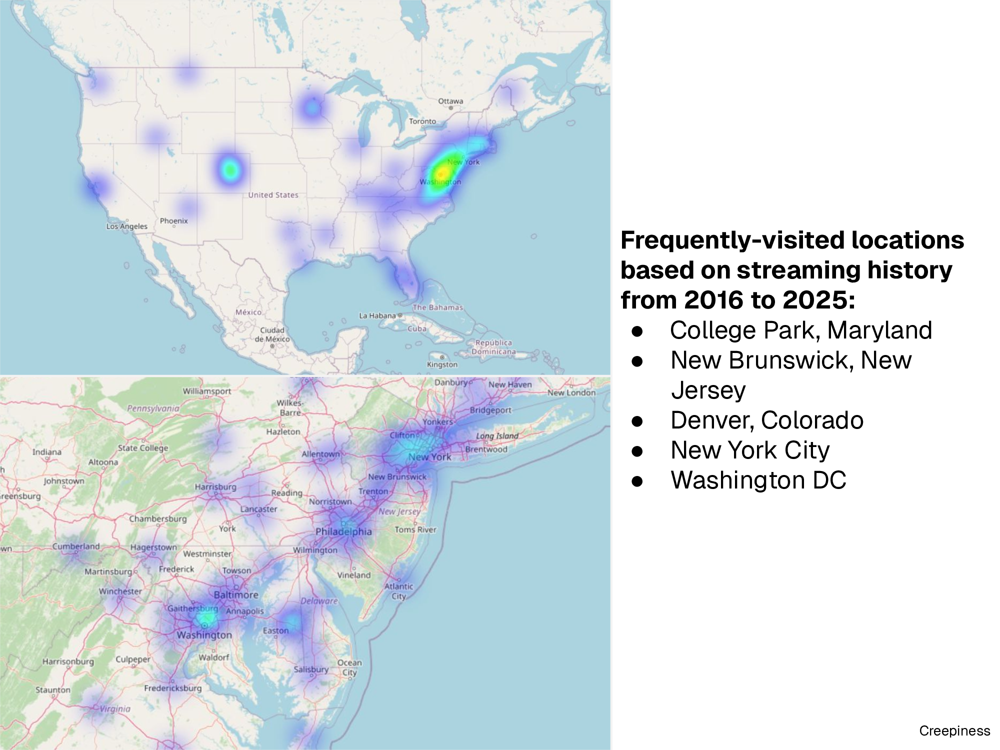
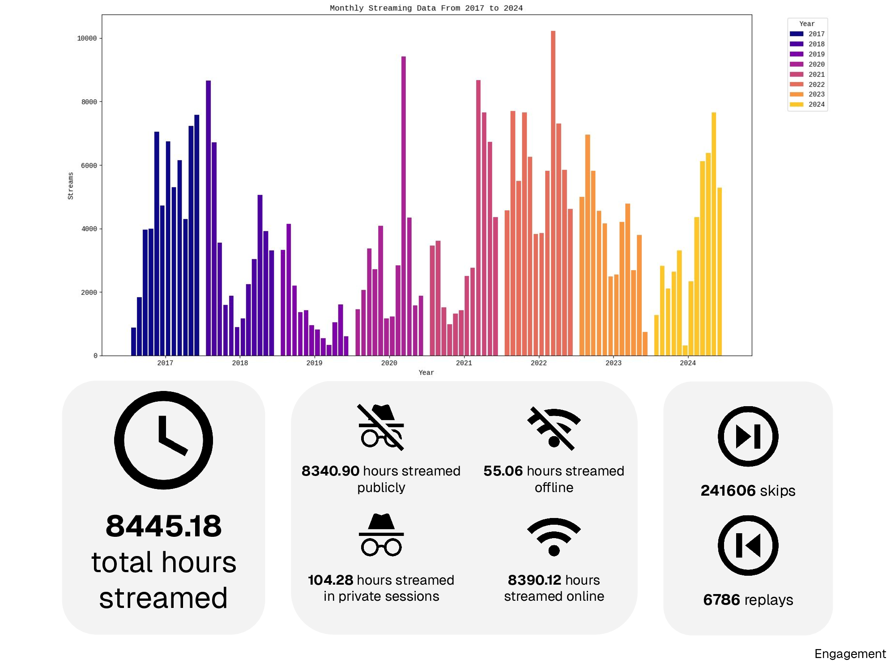
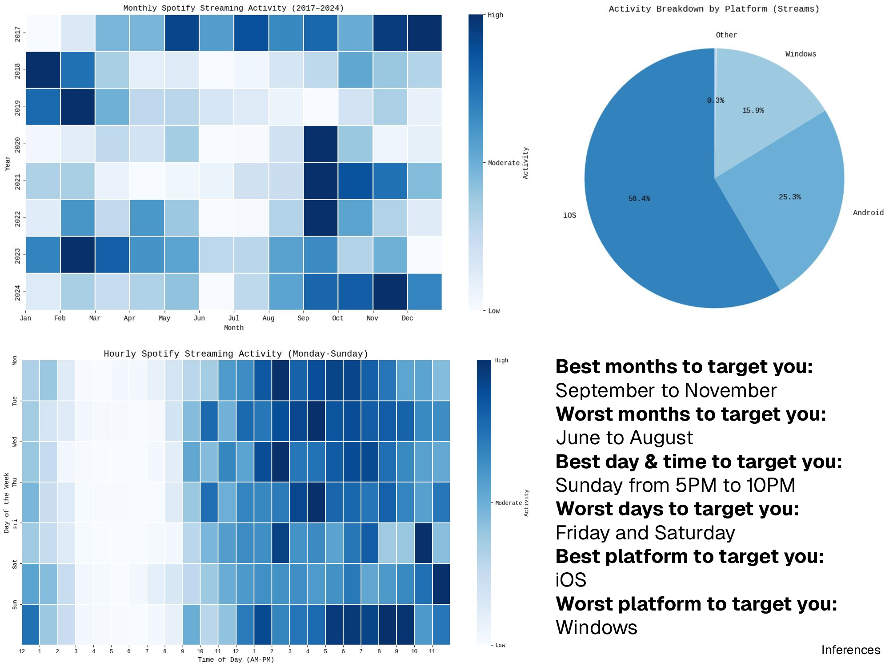
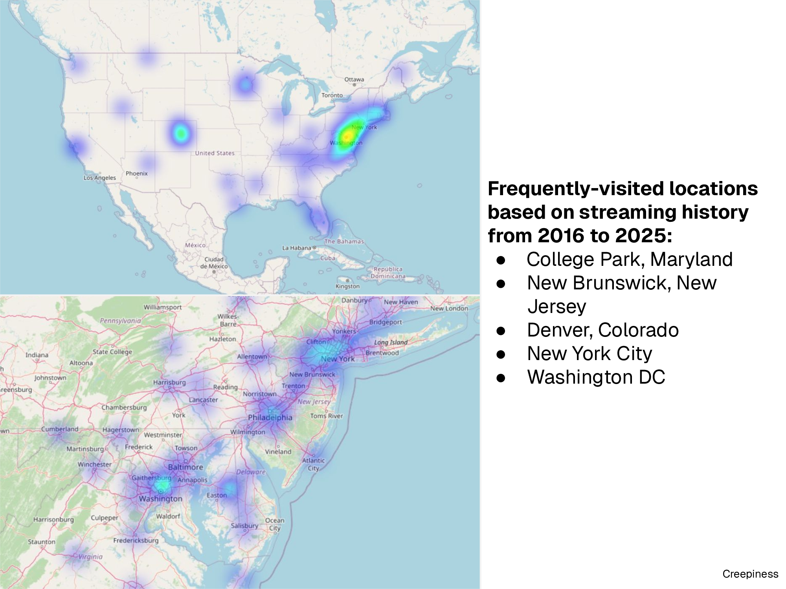

Taking a Look at my Spotify Data Export
What is a Data Export?
Simply put, a data export is a collection of personal information held by a company about a particular user. While they seem rather mundane, data exports are a hot topic in the world of online privacy, due to the commidification of personal data and concerns surrounding data collection/surveillance. In the eyes of many privacy advocates, data exports allow for transparency and accountability (i.e. what data is collected about you and why/how it is used). Furthermore, preventing users from accessing, correcting, or deleting their personal information can lead to significant privacy risks. For example, a user living in a state with anti-abortion laws may want to erase location data that reveals their presence at an abortion clinic. These days, most large tech companies offer free data exports to their users regardless of the jurisdiction they operate under, but this is not done purely out of goodwill. Companies that serve multiple regions are required to abide by the different online privacy laws enforced within them. The most prominent example of this is the EU’s General Data Protection Regulation (GDPR), which applies to all companies that serve consumers within the EU. Coincidentally, many of the large tech companies that offer free data exports to all of their users serve the EU; these include, Google, Facebook, Twitter or X, and Spotify. Under article 15 of the GDPR, consumers have the right to request a copy of their personal information processed by a company, and the purposes of data processing/collection. In certain circumstances though, companies are allowed to withhold personal information requested by a user (e.g. if the information gives away a trade secret). Overall, the biggest flaw of the GDPR and similar legislation is that they do not set a standard for data export formatting and quality, so the export experience can vary drastically from company to company.
My Experience with Data Exports
To get a feel for the data export process, I decided to request a copy of my personal data from Spotify, as I have been using their service for about ten years. If you want to see their official documentation on data exports and article 15 of the GDPR, visit this page. In short, Spotify does a satisfactory job of describing what personal data you will receive in your export, how it is formatted, and how to interpret it. That being said, the waiting period may cause some frustration. The first portion of my export, which contained my account data and streaming history, only took one day to arrive via email. However the second portion of my export, containing technical log information, took nearly three weeks. So if you need this data ASAP, prepare to be disappointed.
Sample Data
While I do not feel like sharing all of my Spotify data, I am fine with showing some samples for any readers that do not plan on requesting data from Spotify. Descriptions for some of the data parameters were provided by Spotify, and can be found in this repository under the “descriptions” folder.
Account Data
Account data was provided through a colleection of JSON files separated by category (identifiers, search queries, following/followers, inferences, payments, etc.). My user data was formatted like so:
{
"username": "davidhan",
"email": "REDACTED",
"country": "US",
"createdFromFacebook": false,
"facebookUid": null,
"birthdate": "1999-08-29",
"gender": "male",
"postalCode": "REDACTED",
"mobileNumber": null,
"mobileOperator": null,
"mobileBrand": null,
"creationTime": "2016-12-21",
"assuredEstimatedAge": null,
"assuredAgeMethod": null,
"assuredAgeTimestamp": null
}Streaming History
Streaming data was also provided through a collection of JSON files separated by year and formatted like so:
{
"ts": "2022-03-28T21:32:17Z",
"platform": "Windows 10 (10.0.19043; x64; AppX)",
"ms_played": 64356,
"conn_country": "US",
"ip_addr": "129.2.180.141",
"master_metadata_track_name": "Into The Light",
"master_metadata_album_artist_name": "Siouxsie and the Banshees",
"master_metadata_album_album_name": "Juju",
"spotify_track_uri": "spotify:track:01V0Tau0s8AQkUm6ae1rEF",
"episode_name": null,
"episode_show_name": null,
"spotify_episode_uri": null,
"audiobook_title": null,
"audiobook_uri": null,
"audiobook_chapter_uri": null,
"audiobook_chapter_title": null,
"reason_start": "trackdone",
"reason_end": "logout",
"shuffle": true,
"skipped": false,
"offline": false,
"offline_timestamp": null,
"incognito_mode": false
}An In-Depth Reflection on my Data Export from Spotify
Does the export request fall under a data protection “right” like the GDPR’s “subject access request?”
I am not an EU citizen or a resident of California, so technically Spotify is not legally required to send me my personal data. However, Spotify says that they offer data exports to all users in compliance with Article 15 of the GDPR, which guarantees the right of access for data subjects. Streaming history and profile data would fall under “personal data” and “personal data categories” mentioned in Article 15.
What frustrations did I experience in terms of accessing and understanding my data?
I did not have any issues with accessing or obtaining my data. The data export page is easy to find, and the request process is pretty simple: just select the data you want to receive (streaming, account, or technical log data). That being said, understanding the data is a little bit more complicated. Spotify provides a README that describes the different labels and parameters in your extended streaming data (e.g. the parameter “conn_country” refers to the country code of the country where the stream was played), but it is definitely imperfect. The README tells you what each label represents, but it does not explain what some of the values actually mean (see the previously linked repository). For example, there is a value called “appload” for the parameter “reason_start” (which tells you why a track started playing), but I can only guess what “appload” refers to. Does “appload” mean that I opened the app, or does it mean that I loaded a song by clicking on it? Additionally, Spotify does not provide a useful README for account data (inferences, identifiers). The README just states your right to access under Article 15 of the GDPR, it does not explain any of the labels or parameters. I have no idea what the inference “1P_Custom_Affinity_Remitly [Advertiser-Specific]” refers to, even after a Google search! I can tell it is a first party inference from “1P,” but that is about it. For less tech-savvy users they might as well send nothing or redact everything, because it is almost useless in its current state.
What was the most interesting thing I learned during the process?
The most interesting thing I learned is that I can confidently point out the places I frequently visit based on streaming data alone. IP address information is not always 100% accurate, but the large sample size definitely helps (tens of thousands of streams over years of listening). Mapping the data allowed me to narrow down my highest-activity locations to specific cities; College Park is unsurprisingly one of them. If I only had access to my streaming data, I would still be able to deduce my university with decent certainty.
Would I say that anything I learned while exploring my data was creepy?
I would not say that anything I found was “creepy,” but that is partially because Spotify did not give me a ton of data to work with. Motion sensor data definitely has the potential to be creepy, but I did not receive it in my export! A lot of the data was also voluntarily given by me, so I am not really creeped out by it (gender, age, location data).
To what extent do I think my data export accurately and comprehensively reflects all of the data Spotify has about me?
I think the data I received is definitely not an accurate or complete reflection of the data Spotify collects about me. For one, I did not receive any meaningful data that is shared with advertisers, and that is not just because I am on an ad-free plan. Many of the inferences made about me are intentionally obfuscated like “1P_Custom_Affinity_Remitly [Advertiser-Specific].” On top of that, there are inconsistencies throughout the data that lead me to believe that Spotify is giving me inaccurate data on purpose. Looking through my streaming data, I can see that Spotify knows what platform/device I listen to music on. I also know that Spotify is aware of my mobile carrier history because of the inferences “1P_Custom_T-Mobile_Switchers [Advertiser-Restricted],” and “1P_Custom_Verizon_Users_All.” However, there is another file that has blank fields for the parameters “mobileOperator,” and “mobileBrand,” even though they clearly have this data.
How do I think Spotify could have improved the data download process? If I was writing a new regulation to improve the right of access, what would I include?
Spotify can improve the data export process by providing useful descriptions for data parameters and values. Current descriptions/labels are definitely lackluster and sometimes leave me with more questions than answers. Also, Spotify does not export the recipients of your personal data, which is required by Article 15 of GDPR. Technically, they meet this requirement by stating the categories of recipient in their privacy policy (e.g. advertising partners, technical service partners), but these categories are too broad in my opinion. I think legislation should require companies to provide users with accurate, comprehensive labels alongside their data exports. Companies should also have to name the actual recipients of your personal data, not just categories. It is hard to hold companies accountable for working with potentially bad/controversial actors when they can just hide that information.
Creating Visualizations with Python
Time for something interesting! Since statistical services like Spotify Wrapped are one of the main selling points of Spotify, I decided to create my own visualizations using data from my export and the power of Google Colab. All of the code used to generate the following visuals/stats can be found in this repository.
Visualizations were grouped into four different categories:
- Descriptives: high-level information (e.g. name, location)
- Engagement: platform usage (e.g. listening time, click counts)
- Inferences: personal information inferred for advertising purposes
- Sensitive: “creepy” or sensitive information collected by the platform
 




